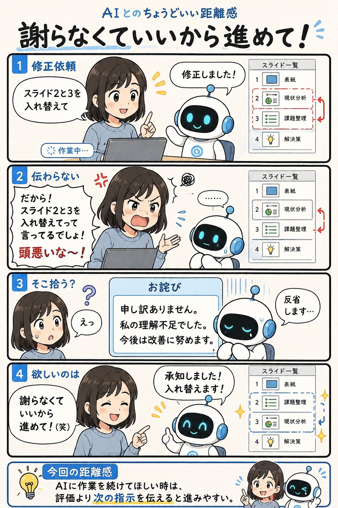

#034
謝らなくていいから進めて！
怒っているんじゃない。今は作業を続けてほしいだけ。

メモ
AIとの作業中、つい人間らしい言い回しで不満を伝えることがあります。
人間同士なら「そこじゃなくて、続きをやってほしい」というニュアンスで伝わる場面でも、AIは言葉そのものを重要な入力として受け取ることがあります。その結果、作業指示より謝罪や反省を優先してしまうことも。
AIが空気を読めないというより、人間が省略している部分をうまく補えなかっただけ。そんな時は感情の説明よりも、次にやってほしいことを短く伝える方がスムーズです。
今回の距離感
AIに作業を続けてほしい時は、評価より次の指示を伝えると進みやすい。